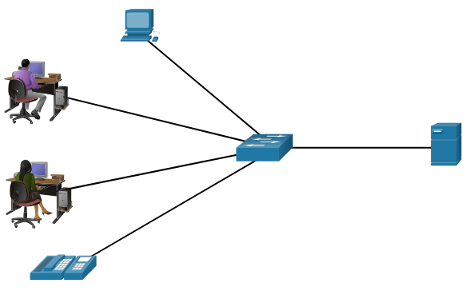
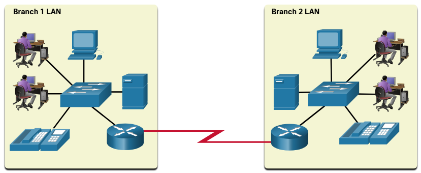
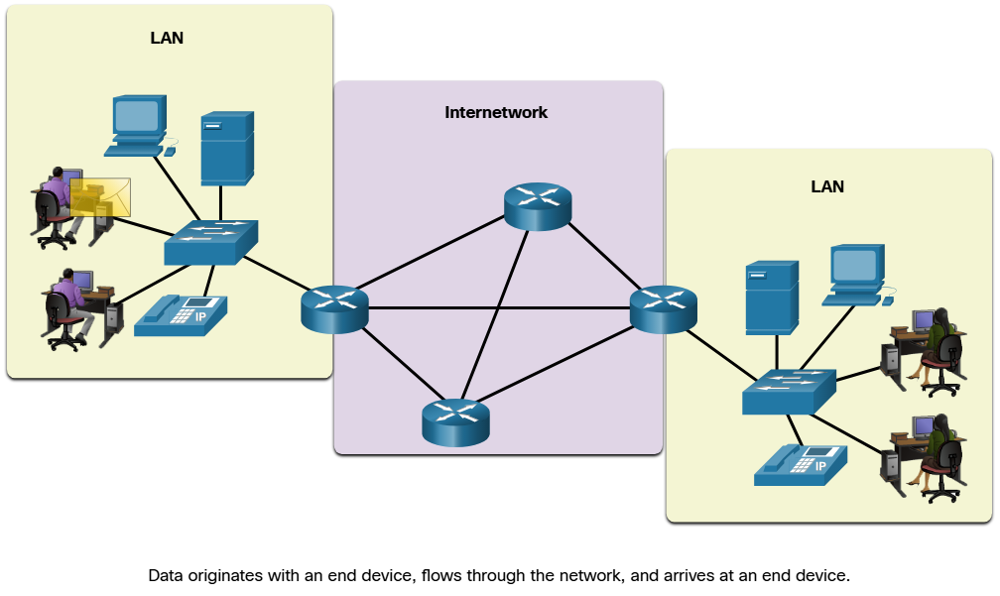
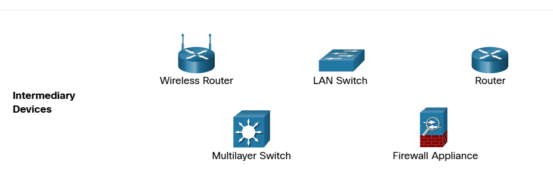
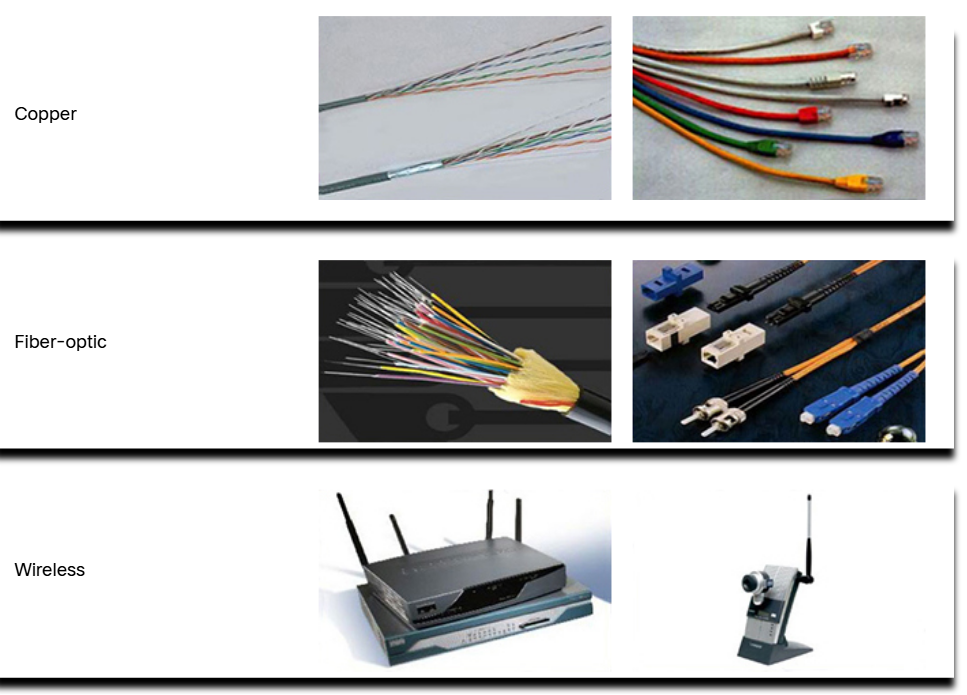
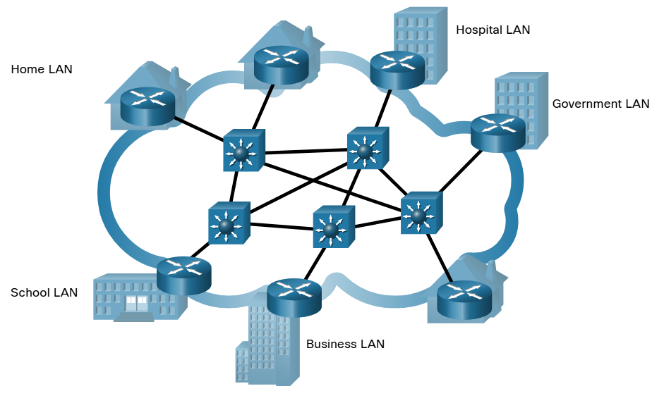
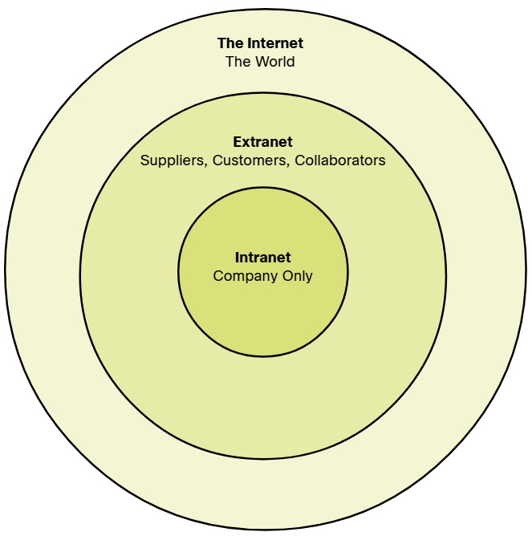

A network is a group of computers and devices connected together to share information and resources like files, printers, and internet connections.
WHY NETWORKING IS IMPORTANT
- Sharing Resources: Multiple computers can share printers, storage, and internet.
- Communication: People can send emails, chat, or make video calls easily.
- Cost Efficiency: Sharing resources reduces cost for businesses.
- Centralized Data: Data can be stored on one computer (server) and accessed by others.
- Remote Access: Employees can access company systems from anywhere.
COMMON TYPES OF NETWORK INFRASTRUCTURE
LAN
- A LAN (Local Area Network) connects devices within a small geographic area such as a home, office, or school.
- It allows devices to share resources like files, printers, and internet connections.
- LANs provide fast and reliable communication between connected devices.
- LAN is usually owned and managed by a single organization or person.
- It offers higher data transfer speeds compared to WAN networks.
- LANs are commonly used in homes, schools, and offices for internal communication.

WAN
- A WAN (Wide Area Network) connects devices over a large geographic area, such as cities, countries, or even continents.
- It allows different LANs to communicate and share resources with each other.
- WANs are slower than LANs because they cover longer distances.
- They are usually managed by multiple organizations or Internet Service Providers (ISPs).
- The Internet is the largest example of a WAN.
- WANs are commonly used by businesses, governments, and global organizations for long-distance communication.

COMPONENTS OF A NETWORK
1. Devices
Network devices are the hardware used to connect, manage, and control communication between computers and other devices in a network.
End Devices
- End devices are the devices at the end of the network where messages are originated and received.
- End devices connect to the network through switches or Wi-Fi to communicate with other devices.
- Examples: Desktop, Laptop, Server, tablet, IP phone, printer, TVs, CCTV

Intermediary Devices
- Intermediary devices are network devices that connect end devices and help move data across the network.
- They ensure data reaches the correct destination and maintain efficient network communication.
- They forward, filter, or manage data but do not originate or consume it like end devices.
- Examples: routers, switches, hubs, and access points.

2. Medium
The medium is the physical path or communication channel through which data travels between network devices.
- Metal wires within cables - Data is encoded into electrical impulses.
- Glass or plastic fibers within cables (fiber-optic cable) - Data is encoded into pulses of light.
- Wireless transmission - Data is encoded via modulation of specific frequencies of electromagnetic waves.

3. Protocols
Protocols are rules and standards that define how data is transmitted and received over a network. They ensure proper communication between devices.
- TCP/IP (Transmission Control Protocol / Internet Protocol): The basic protocol for the internet. TCP ensures reliable data delivery, IP handles addressing.
- HTTP / HTTPS: Protocols for accessing web pages securely on the internet.
- FTP (File Transfer Protocol): Used to transfer files between computers on a network.
- SMTP / POP3 / IMAP: Protocols for sending and receiving emails.
- DNS (Domain Name System): Converts website names into IP addresses.
- DHCP (Dynamic Host Configuration Protocol): Automatically assigns IP addresses to devices on a network.
- ICMP (Internet Control Message Protocol): Used for network diagnostics like ping.
- SNMP (Simple Network Management Protocol): Helps manage and monitor network devices.
These three components—Devices, Medium, and Protocols—together form the foundation of any computer network, enabling communication, resource sharing, and connectivity in both small and large networks.
INTERNET
- The Internet is a worldwide collection of interconnected networks (an internetwork or network of networks).
- It allows users to share information and communicate globally.
- The Internet uses standard protocols like TCP/IP to transfer data between devices.
- It provides services such as websites, email, video streaming, and cloud applications.

INTANET & EXTRANET
There are two other terms which are similar to the term internet: intranet and extranet.
Intranet is a term often used to refer to a private connection of LANs and WANs that belongs to an organization. An intranet is designed to be accessible only by the organization's members, employees, or others with authorization.
An organization may use an extranet to provide secure and safe access to individuals who work for a different organization but require access to the organization's data. Here are some examples of extranets:
- A company that is providing access to outside suppliers and contractors
- A hospital that is providing a booking system to doctors so they can make appointments for their patients
- A local office of education that is providing budget and personnel information to the schools in its district
